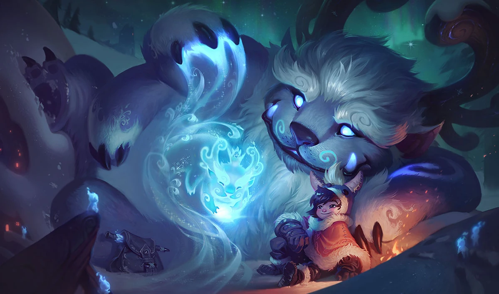

El jungla es el único rol que no tiene una línea fija, en su lugar, se dedica a limpiar los campamentos de la jungla y ayudar a sus compañeros con emboscadas (ganks). Su impacto es clave para la visión del mapa y el control de objetivos como el Dragón y el Barón Nashor.
Tipos de Campeones en la Jungla
- Asesinos: Eliminan enemigos rápidamente con su alto daño. Ejemplo: Kha'Zix, Evelynn, Rengar.
- Tanques: Aguantan daño y facilitan peleas con su CC. Ejemplo: Sejuani, Zac, Amumu.
- Luchadores: Balance entre daño y resistencia. Ejemplo: Viego, Lee Sin, Udyr.
Consejos para Jugar en la Jungla
- Controla los objetivos: Dragones y Heraldo dan ventajas clave a tu equipo.
- Lee el mapa: Aprende a predecir la ubicación del jungla enemigo.
- Sé eficiente: No pierdas tiempo sin hacer nada; farmea y busca ganks efectivos.
¿Que campeones se pueden jugar en este rol?

Lee Sin
Ideal para hacer jugadas rápidas y ayudar a todo el equipo. Requiere precisión y reflejos para aprovechar su kit.

Nunu y Willump
Perfecto para jugadores que priorizan el trabajo en equipo. Su bola de nieve y ultimate pueden cambiar una pelea.

Maestro Yi
Fácil de usar pero difícil de dominar. Letal si consigue ventaja, ideal para limpiar la jungla rápidamente y eliminar enemigos aislados.
¿Es un rol recomendado para principiantes?
- Sí, si te gusta: La Jungla puede ser una opción ideal para jugadores que disfrutan de un estilo de juego más dinámico y estratégico. Si te atrae la idea de tener un impacto directo en todas las líneas del mapa y tomar decisiones clave en momentos críticos del juego, este rol es perfecto para ti. Como junglero, tendrás la oportunidad de ayudar a tus compañeros de equipo mediante gankeos, control de visión y el manejo de objetivos importantes como dragones, heraldos y barones. La jungla es un rol esencial que puede cambiar el curso del juego si se juega correctamente. Además, tendrás la responsabilidad de crear las oportunidades de ventaja para tu equipo, ya sea a través de emboscadas o presionando a los enemigos en las líneas. Es un rol que te permite influir en el ritmo del juego y puede ser muy satisfactorio cuando tus decisiones impactan positivamente a tus compañeros de equipo.
- No, si prefieres: Por otro lado, si eres un jugador que disfruta de un estilo de juego más predecible, donde tus interacciones se limitan a enfrentamientos más directos en una sola línea, la Jungla podría no ser la mejor opción. El rol de jungla requiere una gran capacidad para adaptarse a diferentes situaciones, y las decisiones que tomes pueden tener un impacto muy grande tanto positivo como negativo. Además, si prefieres estar involucrado directamente en peleas constantes o prefieres una línea donde puedas concentrarte únicamente en tu propio progreso (como en la Top Lane o ADC), entonces la jungla podría no ser la mejor opción para ti. Este rol implica mucho movimiento por el mapa, coordinación con tu equipo y también un buen control de la visión, por lo que requiere una buena comprensión de las mecánicas globales del juego.